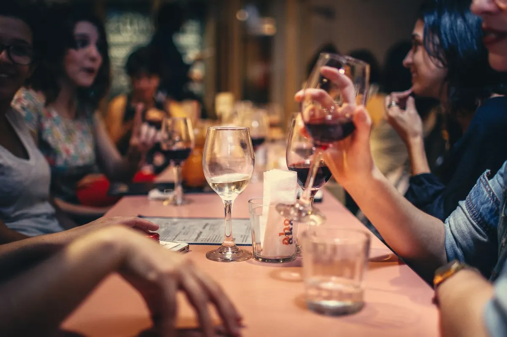
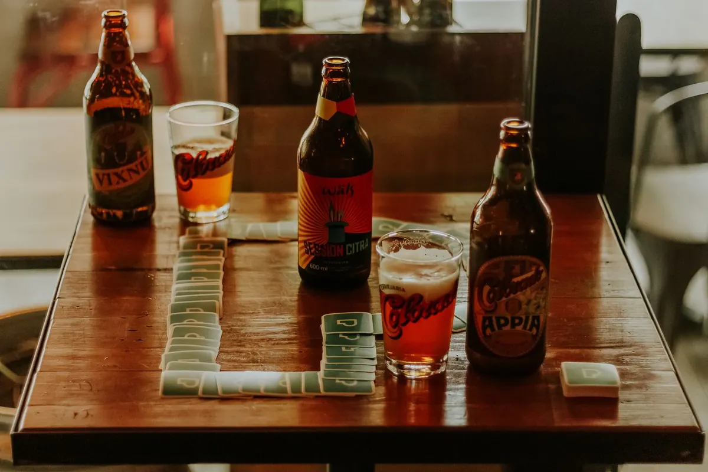

A Esquina
Desde 2019 na esquina do Campos Elíseos.
Um bar de bairro, do jeito que Campinas gosta: mesa na calçada, cerveja gelada e porção pra dividir.

A história
Começou como boteco. Virou ponto de encontro.
O Esquina do Soares abriu em 2019 na Rua Silvia Leite de Godoy e foi ganhando o bairro: primeiro a cerveja gelada, depois as porções, os espetinhos e os lanches para quem chega tarde.
Hoje é onde a vizinhança marca o fim do expediente, comemora aniversário e fica até de madrugada.


A calçada
A melhor mesa é a de fora.
As mesas ficam na calçada, na própria esquina. Junta uma, junta duas, e sempre cabe mais um.
Pra quem sai tarde
Quando tudo fecha, a esquina ainda está acesa.
- Bar e lanchoneteTodos os dias, 18h–6h
- Lanches e porçõesAté o fechamento
- DeliveryPelo iFood